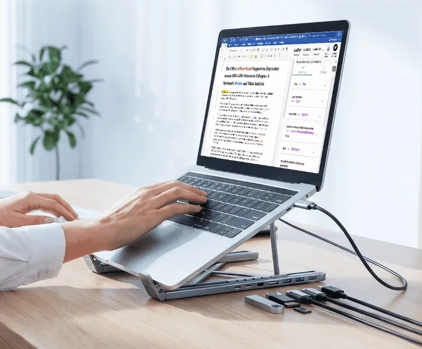

Laptop Stand with 8-in-1 USB-C Hub – Foldable Docking Station
$44.99United States price
Foldable laptop stand with a built-in 8-in-1 USB-C hub for your desk.
- Your order is confirmed after we receive payment
- Delivery to US, UK, Saudi Arabia and Pakistan
- 7-day returns on damaged or faulty items
- Help on WhatsApp before and after you order
About this product
Lift your screen to eye level and clear your desk at the same time. This foldable laptop stand has an 8-in-1 hub built into the base, so your laptop, monitor and accessories connect through one USB-C cable.
Features
- Raises your laptop screen for a more upright sitting position
- 8-in-1 hub built into the stand: HDMI, USB and card reader ports
- Adjustable, foldable design that packs flat for travel
- Open design helps air move around your laptop
- Cleaner desk, one cable to your laptop
- Metal look finish that suits most work spaces
Specifications
| Hub | 8-in-1 built into the stand |
|---|---|
| Connection | USB-C cable to laptop |
| Ports shown | HDMI, USB, card reader, USB-C |
| Design | Foldable and adjustable |
| Colour | Silver / grey |
Price by country
| United States | $44.99 |
|---|---|
| United Kingdom | £37.99 |
| Saudi Arabia | SAR 169 |
| Pakistan | Rs 11,900 |
Shipping is calculated at checkout for your country.
Frequently asked questions
Which laptops does it work with?
Your laptop needs a USB-C (or Thunderbolt) port that supports data and video. Check your laptop specs before ordering.
Does it fit big laptops?
It is made for most laptops. Please message us with your laptop size and we will check.
Can I connect a monitor?
Yes, through the HDMI port, if your laptop's USB-C port supports video output.
Does it fold flat?
Yes. It folds down so you can carry it in a bag.